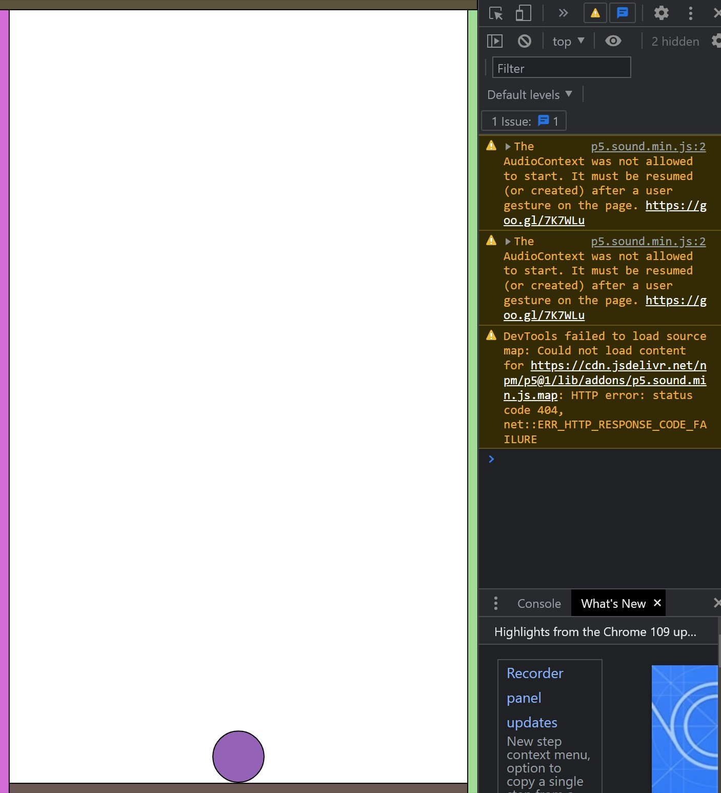
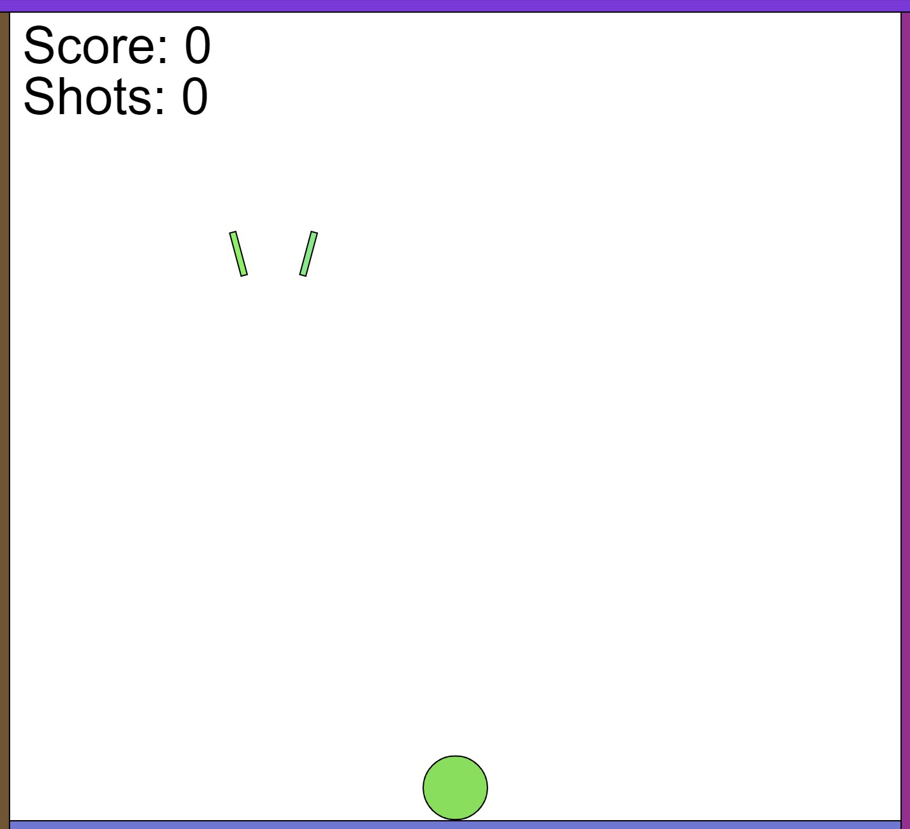

MP3: Dev Toolchain
Overview & Usage
For this project, I've made a game using p5js and p5play. The game is a hoop shooter, where the user can click and drag the mouse to shoot a ball into a basket. The game tracks the number of shots the player takes as well as their score (baskets made).

The game can be played here:
Hoop Shooter GameDevelopment Process
Once I had the development toolchain set up with the in-class activity, I started this project by looking through the p5.play documentation and examples. I couldn't get the p5.play library to link correctly at first through an npm import and node_modules, so I used script tags with the web links to work on the game as I sorted out that issue. As I was learning how to use sprites collision rules, I set up the basic sprites that would be used in the game. It just had boundary boxes along the edges of the screen and a ball for the player to control.
At this early stage, the ball would move towards wherever the player clicked. Next, I added more logic to the 'onmousedown' and 'onmouseup' events so the ball would be propelled when the user clicks and drags. I later changed these to use the mousePressed and mouseReleased functions to get the game to work with touch screens. This behavior feels kind of like the slingshot from Angry Birds. Once this was sorted out, I wrote a function to create a basket using two small rectangular sprites.
To detect whether the player has scored a basket, I set the draw() function to check whether the ball was colliding with both of the basket's rectangles for a short time. When this happens, the player's score is incremented and the ball is moved to its starting position again.
Once the core gameplay was sorted out, I added some extra code to randomize the position of the ball and the basket. This way, every time the player scores a point, the basket and ball reappear in a different place. I then added images to the ball so it looks like it is very uncomfortable with everything that's happening.
Issue Deep-Dive
My biggest issue during this project was getting the p5play library to install and link correctly. I programmed most of the game with web links from p5play.org in script tags in my index.html file, rather than importing from my node_modules folder. I verified that I installed p5 and p5play with npm by looking in my node_modules directory, but the example code from Prof Hannah's game example repository didn't work. By inspecting the web browser while running the game, I found out that the p5 and p5.play files weren't being found by the script tags in my index.html. It turns out I had a logic error where the script tags from the example directory weren't matched to the file structure in my node_modules folder. Maybe it's because I installed a slightly different version of p5 and p5play, but my file structure didn't have a lib folder. I went into my node_modules folder to find the location of the p5.min.js and p5.play.js files, and adjusted the script tags to find them correctly. In the end, Prof Hannah changed the project requirements because so many people were having issues importing these files, but I felt accomplished solving this issue just before she announced that.
Ideas and Future Work
- Add logic for the basket to move around
- Make the window resizable without reloading the page
- Sound effects
Kudos
- Using sprites with p5.play: P5.Play Documentation
- Creative Coding examples: creative-coding.com
- Prof Hannah's example game: GitHub Repo